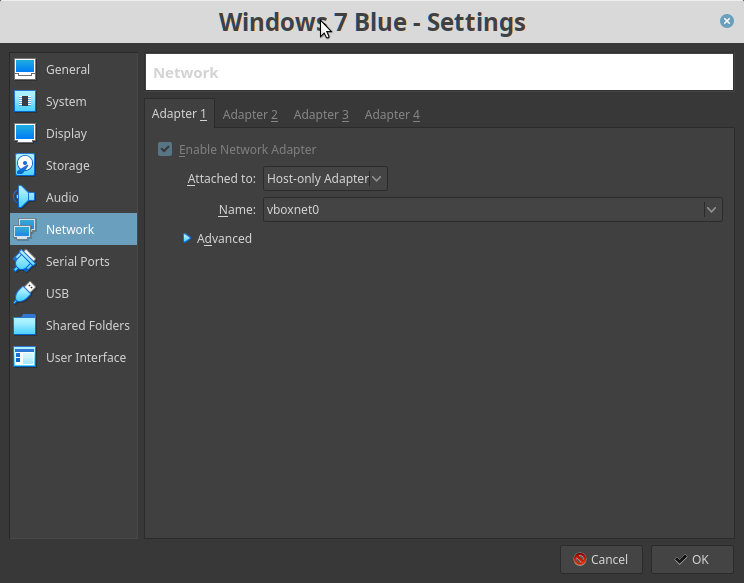

Blue (Windows Vista)
Difficulty: Beginner.
Flag: 3 flags.
Learning:
• Discover network machine.
• Nmap to find opened ports & running services.
• Search exploit in Metasploit.
• Create a meterpreter.
• Get access to the victim machine.
• Dump password files.
• Crack passwords wiith John the Ripper.
• Create a 'shell" on the Windows Machine.
• Edit flags.
Download: https://darkstar7471.com/downloads/ctf-vms/Blue.7z
Install the machine on VirtualBox:
1. Download the file and extract it.
2. On Virtualbox choose File->Import Appliance.
3. Select the file “ova”.
4. Accept to import.


Watch your Machine IP.

 Index
Index